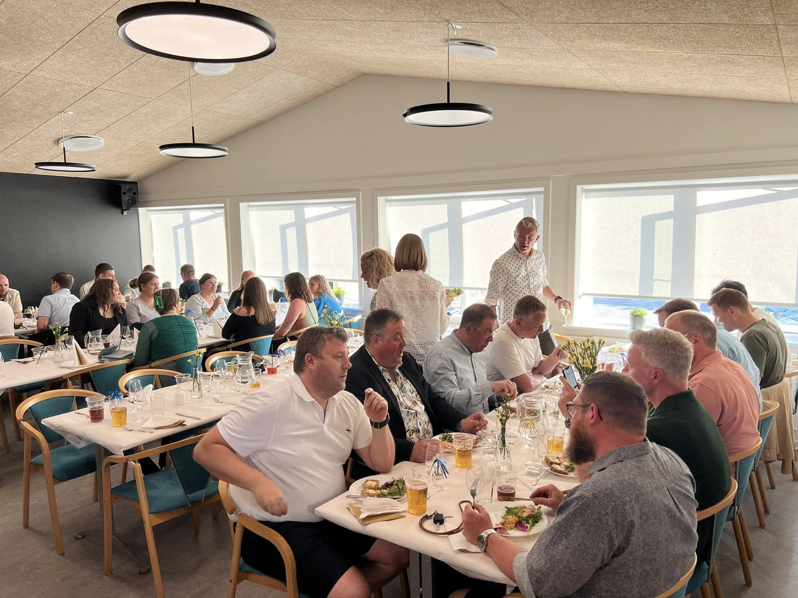
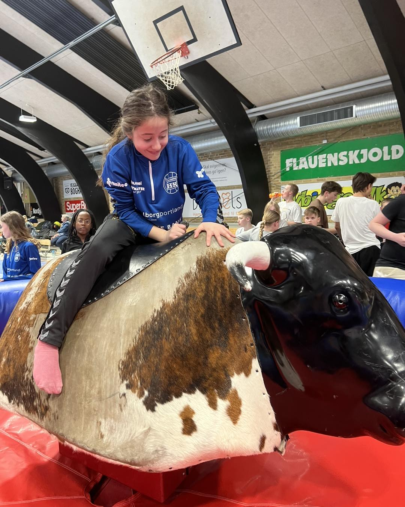
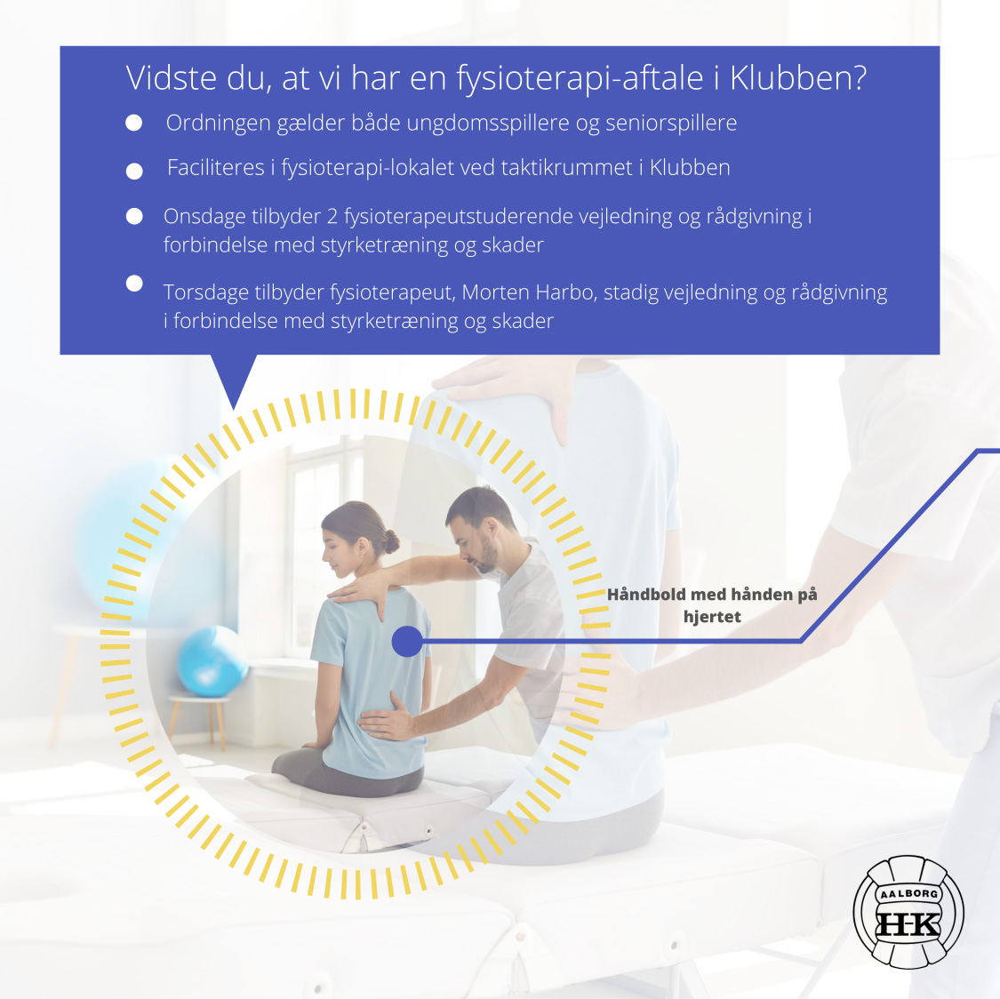

Som medlem af Aalborg HK får du mulighed for at bruge vores trænings
faciliteter som ligger i hallen til fri afbenyttelse så længe du er
medlem af klubben

Lån af cafeteria
Det er muligt at låne cafeteriet til arrangementer, der er
klub-relaterede. Fx. fællesspisning, forældremøde eller
afslutningsfester. Ved arrangementer hvor der er involveret alkohol,
skal der betales 500 kroner i depositum, som bliver ført retur når der
er gjort rent, og rengøringen er godkendt af et medlem af
cafeteriaudvalget. Instrukser for rengøring ligger tilgængelige i
køkkenet. Hvis du ønsker at låne cafeteriet skal du kontakte Camilla
Lund Koch-Melander – 2267 3962 – clundmelander@gmail.com Hvis du
ønsker at låne køkkenet aftales dette og udlån af nøgle på samme tid
Er hallen ledig?
Har du brug for at booke Aalborg Håndbolds hal til en begivenhed?
Uanset om du er træner, udvalgsmedlem eller bare ønsker at arrangere
en speciel begivenhed, er du velkommen til at booke hallen. For at
se, om hallen er ledig på det ønskede tidspunkt, kan du besøge vores
online bookingkalender: link
Hvis du finder en ledig tid, der passer til dine behov, kan du sende
en bookingforespørgsel til Nicki på: formand@aalborghk.dk


Booking af Fysioterapi
På fjerde år kører vi med en fysioterapi-aftale, så alle vores
spillere i Klubben får rig mulighed for vejledning og gode råd.
Ordningen faciliteres i fysioterapi-lokalet ved siden af taktikrummet,
hvor Morten Harbo, uddannet fysioterapeut, tilbyder vejledning hver
anden torsdag. Om onsdagen gives vejledning af to
fysioterapeutstuderende, Camilla Grünewald og Emil Schlüter-Arentsen.
Der tilbydes vejledning og råd i forbindelse med skadesproblematikker
- så har du brug for hjælp til optapening, øvelser, dosering af
træning mm., er det en enestående mulighed for at få god vejledning.
Er du usikker på styrketræningen eller mangler en introduktion til
styrkerummet? Så er det også en del af ordningen, hvor der efter
niveau vejledes. Hvis der er tale om en større problematik, som
vurderes at kræve behandling, vil der blive henvist til egen læge
eller en fysioterapeut på klinik - her har vi et samarbejde med
Aalborg Fysioterapi, som tilbyder prisrabat til en række behandlinger!
Varigheden af en vejledningstid er oftest 15 minutter og skal bookes
digitalt her, hvor du kan booke onsdage og torsdage frem til 20.
marts. Det er indtil påsken, og i vinterferien uge 8 er der lukket.